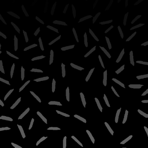
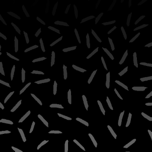

1. Introduction
Given a set of images in which several subjects are captured against a relatively uniform, possibly noisy background, count the number of objects in each image. The objective is to define a processing pipeline that works for all images. All images from a scene should be processed using the same parameter values, if applicable.

 

2. Step-to-step
The following steps outline the preprocessing pipeline for counting rice grains. Each step is designed to handle specific challenges in the images and ensure accurate object detection and counting.
Step 1: Gray-Scale
Convert the input image to grayscale. This simplifies the image by removing color information, reducing the complexity of processing while preserving essential structural details.
Step 2: Remove Sinusoidal Noise
Upon observation, we notice sinusoidal noise in one of the
four images. To address this, we first transform the images
into the frequency domain using FFT and extract the magnitude
spectrum of all four images.
The image with sinusoidal noise exhibits two bright points
along the x-axis in the frequency domain. These points are
carefully removed to eliminate the noise while preserving
critical details in the image.
After applying a threshold to the spectrum image, we observe three bright points along the x-axis. The central point, however, is crucial and must be preserved. To achieve this, we create a mask to protect the central point, leaving only the two noise points. Using the original image, we subtract these two points to remove the sinusoidal noise.
Step 3: Gamma Correction
Perform gamma correction to adjust the brightness levels of the image. This step enhances details in darker or brighter regions, ensuring uniform visibility. The last image shows variations in brightness. To address this, we apply gamma correction to all images, ensuring consistent and visually enhanced results.
Step 4: Binary Image Conversion
Convert the grayscale image to a binary image using a thresholding method. This step separates the objects of interest (rice grains) from the background. Converting the image to a binary format is a crucial step in object counting, as it simplifies the process. To achieve this, we combine Gaussian blur with Adaptive thresholding. This approach enhances the contrast and separates the objects from the background, making it easier to count the rice grains accurately
Step 5: Opening, Closing
Use morphological operations like opening and closing to refine the shapes of the objects. This step removes noise and fills small gaps within objects. We need to change the related parameters in a elaborate way and combine dilate and erode efficiently, avoiding rice grains be connected to each other and losing grains are crucial.
Step 6: Counting Object
After several tries, although we change parameter multiple times, we still get some connected grains. To reduce bad result in counting step, we try to utilize distance transform technique and get sure foreground of 4 images:

Using Connected Component Label technique, We get the result
- Num rice grain of image 1: 102
- Num rice grain of image 2: 100
- Num rice grain of image 3: 100
- Num rice grain of image 4: 97
Some rice grains are lost, some are splited due to previous steps, lead to small inaccuracy in the final result (each should have 100 grains).
3. Evaluation
In the gamma filtering step, it is essential to carefully adjust the parameters to ensure that the white rice grains are not affected by variations in lighting conditions. Multiple trials with different parameter values are necessary to evaluate and identify the optimal settings.
For the mean filtering step, selecting an appropriate kernel size (block size) is crucial. The kernel should be large enough to remove salt-and-pepper noise without compromising the image details.
The binary conversion step is particularly critical. Due to the complex lighting conditions in the images, conventional thresholding methods are insufficient. Instead, we employ adaptive thresholding, which dynamically adjusts to lighting variations. However, achieving optimal results requires extensive experimentation with key parameters specifically, block_size and C. The block_size must be large enough to correspond to the size of the rice grains.
In the opening and closing steps, the parameters must be carefully tuned to ensure that rice grains do not merge or break apart. Afterward, for instances where a few grains remain stuck together, we use the distance transform algorithm. Special attention must be given to the distance transform and the definitions of sure background and sure foreground to successfully separate overlapping grains.
4. Conclusion
After experimenting with various value of parameters, we get those for main steps belows. The result is not the best, in the future, we will continue to find the ways to maintain the real shape and real number of rice grains
cv2.cvtColor(image, cv2.COLOR_BGR2GRAY)
-
((image - x_min) / (x_max - x_min) * 255).astype(np.uint8)
cv2.LUT(remove_stripes[i], table)
-
cv2.medianBlur(gamma_filter_images[i],5)
-
cv2.adaptiveThreshold(img,255,cv2.ADAPTIVE_THRESH_GAUSSIAN_C,cv2. THRESH_BINARY,blockSize=61,C=-5)
-
kernel = np.ones((3, 3), np.uint8), iterations=3 for Open,close
cv2.distanceTransform(img,cv2.DIST_L2,5)
-
cv2.threshold(dist_transform,0.25*dist_transform.max(),255,0)
-
cv2.connectedComponentsWithStats(sure_fg_here, connectivity=8)
5. References
We sincerely thank Hanoi University and the Computer Vision Lab for their valuable support in providing resources and materials for this work. Their commitment to research and collaboration has played an important role in shaping this project. The resources and guidance from the Computer Vision Lab have greatly enhanced our understanding and contributed to the success of this work.